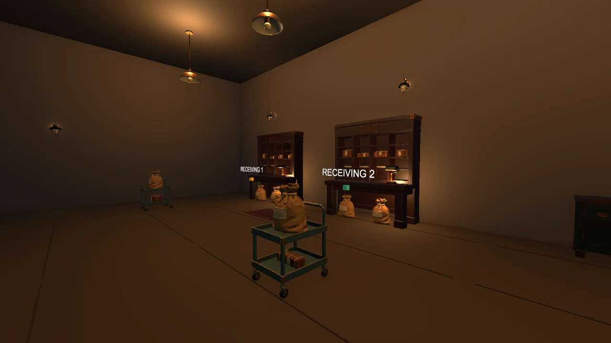

모션 검토 후보
빠르게 한 번에 앉기
앉는 전환 0.4초 · 1.5배 적용
팔 준비 동작을 빼고 둥근 몸통을 유지한 최신 착석 후보입니다. 별도 Unity 검토까지 진행했으며, 본편 의자 상호작용 연결은 남아 있습니다.
A SMALL WORLD, STILL GROWING
네 마리 토끼와 주사위 하나.
Cube Escape의 지금을 모았습니다.
최신 검토 자료만 표시 · 제작 중

앉는 전환 0.4초 · 1.5배 적용
팔 준비 동작을 빼고 둥근 몸통을 유지한 최신 착석 후보입니다. 별도 Unity 검토까지 진행했으며, 본편 의자 상호작용 연결은 남아 있습니다.
개인 태엽 → 캡슐 준비 → 하강 → 주사위 방 → 미니게임 방.


실제 Play의 프레임 진행과 일부 입력·이동·충돌을 확인했습니다. 모든 방의 미니게임 완주나 최종 품질 승인을 뜻하지 않습니다.